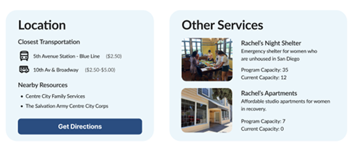
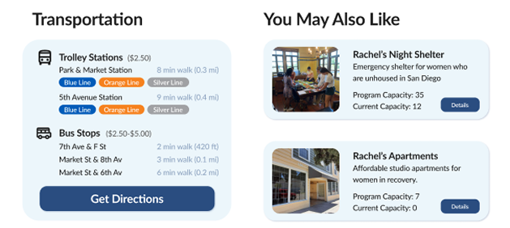
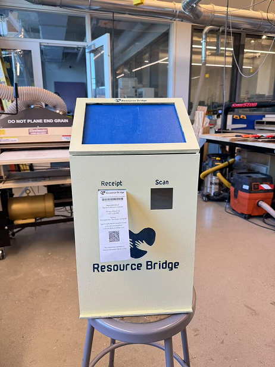
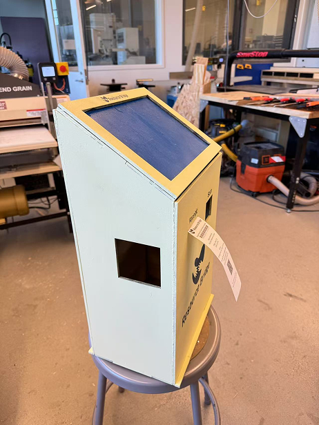
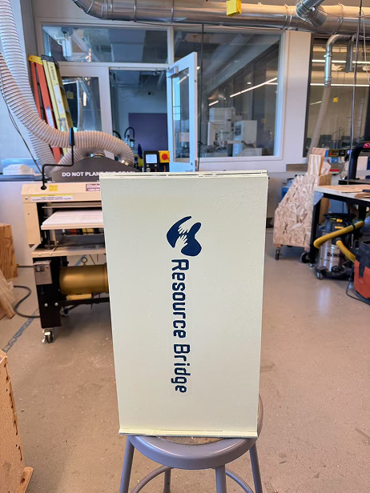
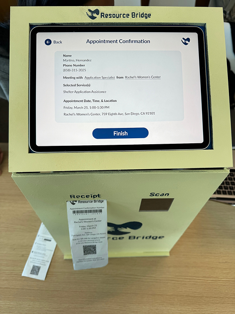
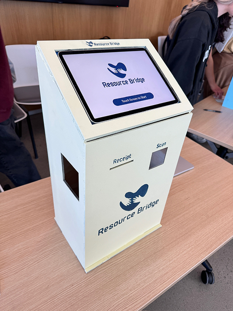
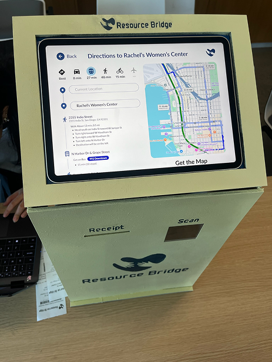

Our team developed Resource Bridge, a community kiosk designed to address gaps in resource access for San Diego's
unhoused population. Moving beyond standard city kiosks that prioritize business directories,
we built a human-centered platform focused on real-time shelter availability and essential service navigation.
Resource Bridge was designed to tear down this barrier by providing a physical, reliable point of access
in the heart of the community. By removing unnecessary steps and confusion, this kiosk helps people quickly find accurate,
up-to-date support in moments that really matters.
PROBLEM STATEMENT
The Gap Between Need and Access
San Diego faces a severe homelessness crisis with thousands of affected individuals,
yet a massive gap exists in how people access life-saving resources.
Current support systems rely heavily on inconsistent word-of-mouth or 2-1-1 referrals that suffer from long wait times
and outdated information. For an unhoused individual, the lack of digital access and proper documentation becomes a wall,
making it 10x harder to secure food, healthcare, and shelter compared to the general population.
RESEARCH AND PAIN POINTS
Our Insights
Our group conducted extensive research through desk research, competitive analysis, and direct interviews with both unhoused individuals in downtown San Diego and a program manager at PATH (People Assisting The Homeless)
- Limitations in Accessing Resources: Interviews revealed limited awareness of available resources, heavy reliance on 2-1-1 and word of mouth, long travel distances, extended wait times, and outdated or inaccurate information online.
- Barriers to Support: Individuals are disadvantaged due to limited digital literacy, language barriers, lack of translations, and the burden of extensive paperwork.
- System Inefficiency: Manual logging processes contribute to long wait times, unclear document requirements, and misinformation. Combined with outdated information and language barriers, these issues often result in wasted trips and missed opportunities for support.
DESIGN FEATURES
What We Designed
After conducting peer reviews, we identified three core features to focus on for our kiosk
- User-Centered Experience: Prioritizes quick access to essential services such as shelter, food, and healthcare. Users can scan a QR code to revisit information later, and clear, step-by-step instructions ensure usability across all literacy levels.
- Efficiency & Accessibility: Filters allow users to sort resources based on their specific needs, supported by a streamlined and intuitive interface for easy navigation. Multilingual support helps reduce language barriers and expands access for diverse communities.
- Real-time Information & Availability Check: The system provides comprehensive, up-to-date listings of shelters and services, along with interactive maps that display locations, distances, and public transportation routes.
USER INTERVIEWS
Testing & Improvements
With our final set of design features, we created a high-fidelity prototype and conducted in-person interviews at a popular gathering areas for unhoused individuals in downtown San Diego
Patterns Identified:
- Low Filter Discoverability: Most participants struggled to find the filter button.
- Conflicting Affordances: Users frequently mistook static information tags for interactive buttons and instinctively clicked on general content containers rather than specific action links.
- Interaction Friction: Occasional responsiveness issues and "false affordances" led to user frustration and repeated clicking during navigation.
- Positive Aesthetic Response: Despite these usability issues, participants found the kiosk interface visually appealing and the content to be potentially helpful.
Design Iterations:
- Improve Filter Visibility: Increase the visibility of the filter button to make it easier to discover.
- Clarify Action Labels: Remove "Learn More," as users instinctively clicked the entire card; replace it with "Details" to better indicate interactivity and intent.
- Remove "Learn More": Users clicked the box instinctively; replace it with "Details" for clarity.
Notable Iteration
Though not directly mentioned in user testing, we felt adjusting these sections would better clarify section differences. Revising the design and layout enhances visual hierarchy, helping users distinguish key information and navigate more intuitively


LESSONS LEARNED
Reflection
Collaboration was the backbone of developing Resource Bridge. Working closely with other designers for the
first time was both a challenge and a valuable learning experience. It showed me just how essential teamwork is, not just for dividing tasks, but
for pushing ideas further and being able to create something truly impactful.
User testing and feedback played a major role throughout this project, shaping our final product in ways we
hadn't initially anticipated. It truly goes to show that no matter how polished a design may seem, there is always room for iteration and growth.
More importantly, it showed us that individual perspectives can only go so far, especially when designing for experiences we may never fully understand ourselves.
Meaningful design can only happen through direct input from the people who navigate those challenges every day.
INTERACTIVE PROTOTYPE
High-Fidelity Prototype
FOR THE CURIOUS
Physical Prototype
Beyond the digital design, our team was also tasked with building a physical kiosk prototype as part of our project.





